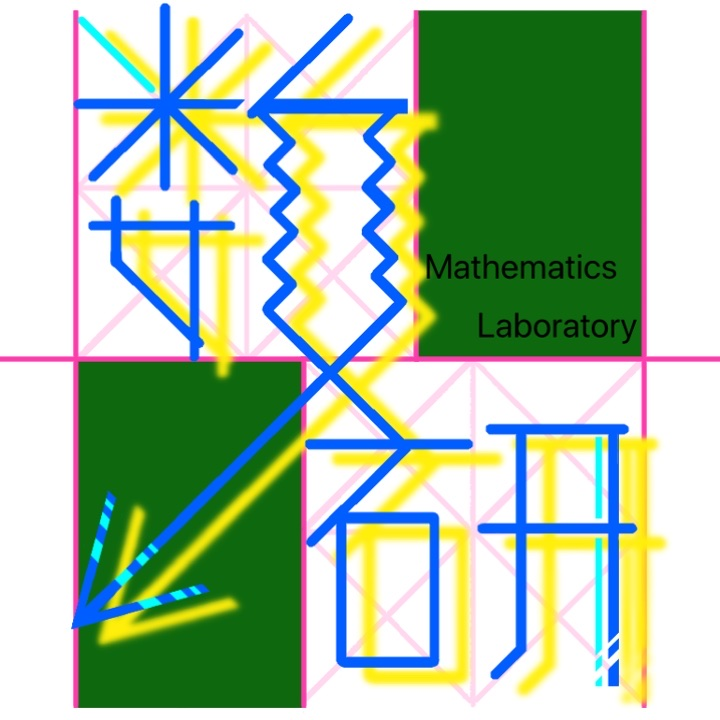
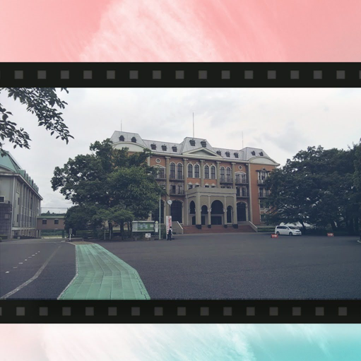

出展団体一覧
並び順は未調整。何順がいいでしょうか…？
ただし、「縦並び」が原則なので、改段での調整を考えると、あまり意味を持たせた整列は、逆に見づらいかも知れません。
スマホ版のレイアウトも、縦長になりすぎる気がするので、要検討…（アイディアください）
ただし、「縦並び」が原則なので、改段での調整を考えると、あまり意味を持たせた整列は、逆に見づらいかも知れません。
スマホ版のレイアウトも、縦長になりすぎる気がするので、要検討…（アイディアください）


生徒会
ドミノ企画
今このチャンネルをご覧の皆様こんにちは!!
今回、私たち生徒会はドミノ企画ということで7名の生徒会役員とボランティアとして参加してくださった方たちとともに、なんと、およそ11500個のドミノを並べました。
果たしてドミノを通して何が浮かび上がるのかは、画面の前の皆様の目でお確かめください。
コロナでたまった不安やイライラなどをすべてドミノ倒しにしてしまいましょう。
どうぞお楽しみに！
今回、私たち生徒会はドミノ企画ということで7名の生徒会役員とボランティアとして参加してくださった方たちとともに、なんと、およそ11500個のドミノを並べました。
果たしてドミノを通して何が浮かび上がるのかは、画面の前の皆様の目でお確かめください。
コロナでたまった不安やイライラなどをすべてドミノ倒しにしてしまいましょう。
どうぞお楽しみに！

JRC部
レッドクロス赤ずきん！
～命を守ろう！救おう！～
～命を守ろう！救おう！～
団体紹介
みなさんこんにちは！私たちは、国際学院JRC（青少年赤十字）部です。
普段は校外を含めたボランティア活動が多い部活ですが、今回は一味違った「楽しく見て学べる」をテーマにした動画を作成しました！
是非、楽しみながらご覧ください！
動画①：チーム紹介
私たちの紹介です。動画②：レッドクロス赤ずきん！〜命を守ろう！救おう！〜
救急法の一つである「心肺蘇生法とAED」について、童話「赤ずきんちゃん」とコラボした演劇動画です。楽しみながらご覧下さい。文芸同好会
イラスト＆創作短編

私たち数学研究室は、問題やゲーム、プログラミング等、色々な角度から、数学を「研究」しています。
数学研究室
数学研究室
団体紹介
みなさんこんにちは！私たち数学研究室は、問題やゲーム、プログラミング等、色々な角度から、数学を「研究」しています。
出展概要
小中学生も楽しく学べる数学の動画や、プログラミングを作成しました。

出展団体名（なくてもいいけど…）
五峯祭オープニングムービー
みなさん、こんにちは。
五峯祭オンライン開催ということで、オープニングムービーを制作いたしました。
少しでも楽しんでいただけると幸いです。
動画
五峯祭オンライン開催ということで、オープニングムービーを制作いたしました。
少しでも楽しんでいただけると幸いです。
吹奏楽部
いわたとゆかいな仲間たち
団体紹介
皆さんこんにちは 国際学院吹奏楽部です！私たちは中学生3人、高校生5人で活動しています！
このご時世、なかなか練習時間が取れませんでしたが短い時間で効率よく練習しました！
出展概要
誰もが知っているあの有名なポップス曲をメドレー形式で演奏します。イヤホン推奨！ MVにも注目！
1年H・K組
「終わらないSHR」
（リアル脱出ゲーム風ドラマ）
（リアル脱出ゲーム風ドラマ）
団体紹介
私たちは、1年H組と1年K組が合体した合同チームです。五峯祭のために謎を考えたり、小道具の準備をしたりなど様々なことを頑張りました。
どうぞお楽しみください。
出展概要
目が覚めると体が拘束され、教室に閉じ込められていた。まわりを見ると、同じくらいの年の子たちが、私を合わせて4人いた。
あぁそうか。だからあの時“あの子“はそう言ったのか。
でも、確かに。君の言う通りだ。だから…
――次こそ私は“活躍”する
――次こそ私は“脱出“する。『終わらないSHR』を。
――“あの時の私”を犠牲にして。
でも、確かに。君の言う通りだ。だから…
――次こそ私は“活躍”する
――次こそ私は“脱出“する。『終わらないSHR』を。
――“あの時の私”を犠牲にして。
図書委員会
図書委員によるおすすめ図書のPOP展示
紹介文
その他、検討中？の団体
3年D組
OGOs
かるた同好会
OGOs
かるた同好会